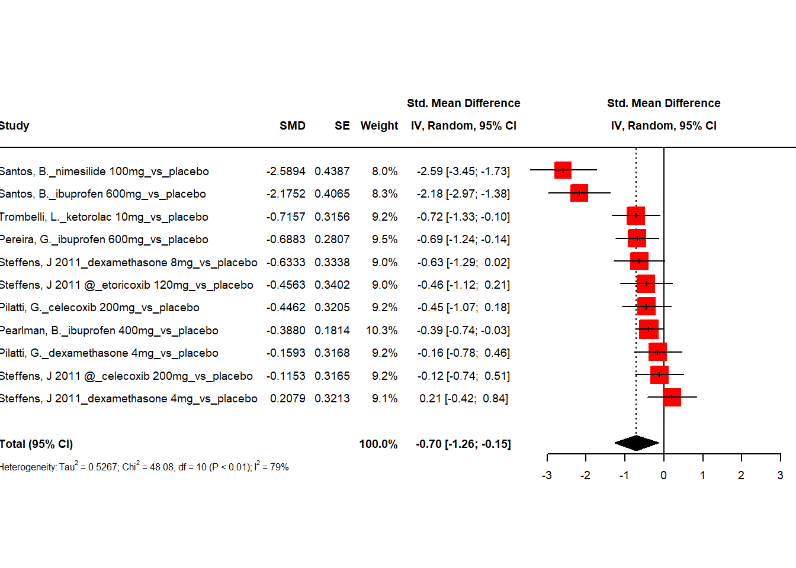
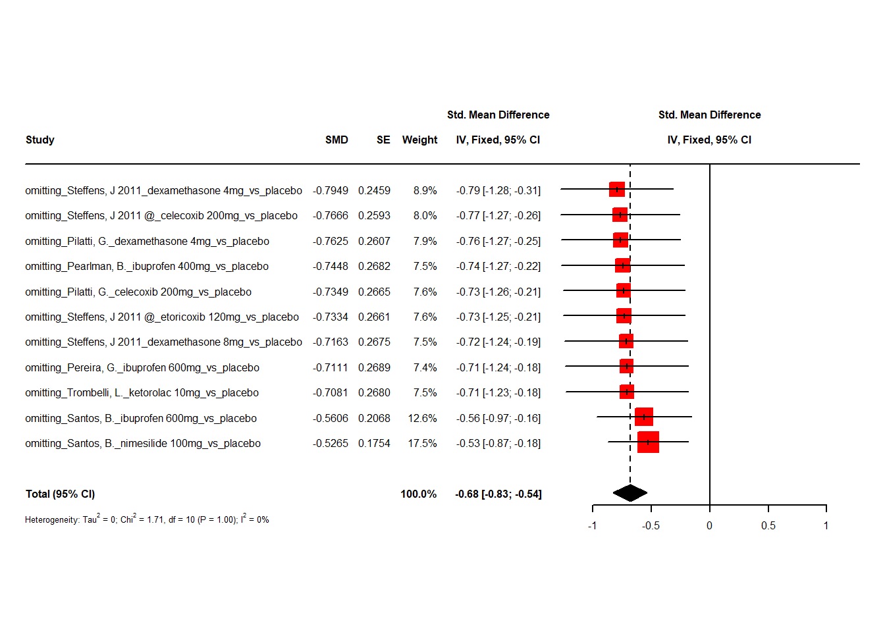

one hour
2024-05-24
Last updated: 2024-05-24
Checks: 5 2
Knit directory: Collaborations/
This reproducible R Markdown analysis was created with workflowr (version 1.7.1). The Checks tab describes the reproducibility checks that were applied when the results were created. The Past versions tab lists the development history.
The R Markdown is untracked by Git. To know which version of the R
Markdown file created these results, you’ll want to first commit it to
the Git repo. If you’re still working on the analysis, you can ignore
this warning. When you’re finished, you can run
wflow_publish to commit the R Markdown file and build the
HTML.
Great job! The global environment was empty. Objects defined in the global environment can affect the analysis in your R Markdown file in unknown ways. For reproduciblity it’s best to always run the code in an empty environment.
The command set.seed(20210523) was run prior to running
the code in the R Markdown file. Setting a seed ensures that any results
that rely on randomness, e.g. subsampling or permutations, are
reproducible.
Great job! Recording the operating system, R version, and package versions is critical for reproducibility.
Nice! There were no cached chunks for this analysis, so you can be confident that you successfully produced the results during this run.
Using absolute paths to the files within your workflowr project makes it difficult for you and others to run your code on a different machine. Change the absolute path(s) below to the suggested relative path(s) to make your code more reproducible.
| absolute | relative |
|---|---|
| C:/Shengtong/Research/AllCollaboration/Collaborations/analysis/Rfunctions.R | analysis/Rfunctions.R |
Great! You are using Git for version control. Tracking code development and connecting the code version to the results is critical for reproducibility.
The results in this page were generated with repository version a728cc0. See the Past versions tab to see a history of the changes made to the R Markdown and HTML files.
Note that you need to be careful to ensure that all relevant files for
the analysis have been committed to Git prior to generating the results
(you can use wflow_publish or
wflow_git_commit). workflowr only checks the R Markdown
file, but you know if there are other scripts or data files that it
depends on. Below is the status of the Git repository when the results
were generated:
Ignored files:
Ignored: .Rhistory
Ignored: analysis/.Rhistory
Ignored: analysis/2022_Mar2_Marinho_cache/
Untracked files:
Untracked: analysis/2023_0301_Christos_1hour.Rmd
Unstaged changes:
Modified: analysis/2023_0301_Christos.Rmd
Modified: analysis/2023_0301_Christos_3days.Rmd
Note that any generated files, e.g. HTML, png, CSS, etc., are not included in this status report because it is ok for generated content to have uncommitted changes.
There are no past versions. Publish this analysis with
wflow_publish() to start tracking its development.
Home
sample data
forest plots
ALL studies per author – no groups
- random effect model

- because \(confidence~interval=mean+/-1.96 \times\frac{SD}{\sqrt{sample~size}}\), so \(SD=\sqrt{sample~size} \times(CI~upper~limit-CI~lower~limit)/3.92\), then the raw mean difference could be calculated as
\[Total \times SD=Total \times \sqrt{sample~size} \times(CI~upper~limit-CI~lower~limit)/3.92 \] In above example, the raw mean difference is \(-0.7\times \sqrt{11} \times (-0.15+1.26)/3.92=-0.657\).
- Random effect model, effects of individual studies do not only deviate due to sampling error alone but that there is another source of variance,
\[\widehat{\theta}_k=\underbrace{\mu+\zeta_k}_{\theta_k}+\epsilon_k\]
\(\mu\) is the true pooled effect size; \(\theta_k\) is the true effect size of study k. here is the relationships among them. \(\zeta_k\) is a product of chance alone.
- We use R package-meta to calculate standardised mean difference
(SMD) and 95% confidence interval (CI) in every study between each
treatment and placebo, reported in the Table on the left and visualized
on the right. Pooled effect was calculated as
Totalin the last row. Heterogeneity measure was presented under the table.

When there is no publication bias, the data points in such a plot should form a roughly symmetrical, upside-down funnel. Studies in the top part of the plot (those with low standard errors), should lie closely together, and not far away from the pooled effect size. In the lower part of the plot, with increasing standard errors, the funnel “opens up”, and effect sizes are expected to scatter more heavily to the left and right of the pooled effect.
The vertical line in the middle of the funnel shows the average effect size
overall it is not symmetric
significant studies are in interested areas with \(p<0.05\), and \(p<0.01\).
m.gen$zval.random # Z value[1] -2.82519m.gen$pval.random[1] 0.017999761 hour - Studies per surgery
random effect model
* raw difference -0.72
> -0.71*(10)^0.5*(-0.08+1.34)/3.92 [1] -0.7216769
1 hour - Studies per timing of preemptive medication administration
Preemptive medication given 1 hour prior to surgery or longer
- random effect model
* raw difference -0.82
> -0.75*(9)^0.5*(-0.04+1.47)/3.92 [1] -0.8207908
Preemptive medication given less than 1 hour prior to surgery
- random effect model
- fixed effect model

- raw difference -0.11
> -0.47*(2)^0.5*(-0.16+0.78)/3.92 [1] -0.105128
- pooled effect size under the fixed-effect model simply uses a weighted average of all studies Inverse-variance meta analysis
\[\widehat{\theta}=\frac{\sum_k \widehat{\theta}_kw_k}{\sum_k w_k}\]
\(\widehat{\theta}\) is the pooled effect size, \(\widehat{\theta}_k\) is kth study effect size, and \(w_k\) is the weight as \(w_k=\frac{1}{s_k^2}\), \(s_k^2\) is the variance.
1 hour - Studies only with ibuproben
- random effect model

- fixed effect model

1 hour - Studies only with dexamethasone
- random effect model

- fixed effect model

1 hour per drug analysis
Ibuprofen 600mg
- random effect model
- fixed effect model
dexamethasone 4mg
- random effect model

- fixed effect model

celecoxib 200mg
- random effect model

- fixed effect model

1 hour - Sensitivity analysis
- random effect model

we remove one study at a time, and re-do the same analysis, to see how the removed study influences the results from all studies included.
fixed effect model
 * raw difference -0.17
* raw difference -0.17
> -0.68*(11)^0.5*(-0.54+0.83)/3.92 [1] -0.1668465
For an individual study, a square with treatment estimate in the center and confidence interval as line extending either side of the square. The size of this square is determined by the weight.
vertical reference lines indicates the point of no effect
For meta-analysis results, a diamond with treatment estimate in the center and right and left side corresponding to lower and upper confidence limits
heterogeneity (null hypothesis: all studies estimate the same effect) is measured by Cochran’s Q, which is calculated as the weighted sum of squared differences between individual study effects and the pooled effect across studies, following \(\chi^2\) distribution with number of studies-1 DF.
\(I^2\) statistic describes the percentage of variation across studies that is due to heterogeneity rather than chance more details.
SMD interpretations, and calculations, \(SMD=\frac{\bar{X}_1-\bar{X}_2}{s_{pooled}}\).
calculate SMD using example of Pearlman, B._ibuprofen 400mg_vs_placebo
n1=63; s1=21; n2=61; s2=25
# Calculate s_pooled
s_pooled <- sqrt( # s_pooled is pooled standard deviation
(((n1-1)*s1^2) + ((n2-1)*s2^2))/
((n1-1)+(n2-1))
)
# Calculate the standard error
se <- s_pooled*sqrt((1/n1)+(1/n2))
#se
mean1=10; mean2=19
(mean1-mean2)/s_pooled # this is SMD for Pearlman, B._ibuprofen 400mg_vs_placebo[1] -0.390386network meta-analysis
In traditional meta-analysis, direct comparison between two treatments may not be available because in typical clinical trials, what often happens is the comparison between specific treatment and placebo. So network meta analysis enables the assessment of relative effectiveness of several treatments by incorporating indirect comparisons using multivariate linear regression models. for more details see Evidence Synthesis for Decision Making 2: A Generalized Linear Modeling Framework for Pairwise and Network Meta-analysis of Randomized Controlled Trials and Automating network meta-analysis
Assume K trials and M comparisons, \(\hat{\theta}_m\) is effect size of every comparison, to model the observed effect size \({\bf \hat{\theta}}=c(\hat{\theta}_1, \hat{\theta}_2, \cdots, \hat{\theta}_M)\),
\[\bf \hat{\theta}=X\theta_{treat}+\epsilon\]
\(\bf \hat{\theta}\): observed effect size vector
\(\bf X\): \(m \times n\) design matrix, columns represent different treatment, rows represent comparisons,it’s not full rank and Moore-Penrose pseudoinverse matrix was used in netmeta for parameter estimate
\(\bf \theta_{treat}\): true effect size of n unique treatments, its estimate is the goal
\(\bf \epsilon\) errors following \(\epsilon_m \sim N(0, \sigma_m^2)\).
random effect model

we use R package-netmeta for network meta analysis.
overall comparison structure
direct links mean there are direct comparison, otherwise indirect comparisons
degree of thickness represents how often we find a specific comparison
numbers on the edge indicate how many studies involve that comparison
- a mean path length > 2 means that a comparison estimate should be interpreted with particular caution.
P-score
nimesilide 100mg 0.9185
ibuprofen 600mg 0.8320
dexamethasone 8mg 0.5577
ketorolac 10mg 0.5559
etoricoxib 120mg 0.4775
ibuprofen 400mg 0.4165
celecoxib 200mg 0.3492
placebo 0.1986
dexamethasone 4mg 0.1941
Q statistics to assess homogeneity / consistency
Q df p-value
Total 10.02 3 0.0184
Within designs 0.00 0 --
Between designs 10.02 3 0.0184
Between-designs Q statistic after detaching of single designs
(influential designs have p-value markedly different from 0.0184)
Detached design Q df p-value
placebo vs ibuprofen 600mg 0.96 2 0.6180
placebo vs celecoxib 200mg vs dexamethasone 4mg 9.06 1 0.0026
Q statistic to assess consistency under the assumption of
a full design-by-treatment interaction random effects model
Q df p-value tau.within tau2.within
Between designs 10.02 3 0.0184 0 0random effect model is used, due to significant p values
higher P-score, the better it is
placebo is used as the reference group
fixed effect model
P-score
nimesilide 100mg 0.9474
ibuprofen 600mg 0.8790
ketorolac 10mg 0.6286
dexamethasone 8mg 0.6186
etoricoxib 120mg 0.5072
ibuprofen 400mg 0.4213
celecoxib 200mg 0.3101
placebo 0.1024
dexamethasone 4mg 0.0855
Q statistics to assess homogeneity / consistency
Q df p-value
Total 10.02 3 0.0184
Within designs 0.00 0 --
Between designs 10.02 3 0.0184
Between-designs Q statistic after detaching of single designs
(influential designs have p-value markedly different from 0.0184)
Detached design Q df p-value
placebo vs ibuprofen 600mg 0.96 2 0.6180
placebo vs celecoxib 200mg vs dexamethasone 4mg 9.06 1 0.0026
Q statistic to assess consistency under the assumption of
a full design-by-treatment interaction random effects model
Q df p-value tau.within tau2.within
Between designs 10.02 3 0.0184 0 0in this analysis, placebo is treated as reference.
P score is a frequentist analogue to SUCRA, for details. It measures the certainty the one treatment is better than other competing treatments. The larger P score, the better the treatment is.
from P-score ranking, the nimesilide 100mg might be the most effective treatment, however solely because it has the highest score in the ranking, doesn’t mean it’s the best one, need further information from forest plot
In the forest plot, if two treatments have overlapping, then these two are not significantly different, and they are otherwise. For example, nimesilide 100mg and ibuprofen 600mg are not different from one another, although nimesilide 100mg is higher than ibuprofen 600mg in the ranking. It’s safe to say ibuprofen 600mg is better than dexamethasone 4mg, since no overlap between their CI’s.
sessionInfo()R version 4.3.2 (2023-10-31 ucrt)
Platform: x86_64-w64-mingw32/x64 (64-bit)
Running under: Windows 10 x64 (build 19045)
Matrix products: default
locale:
[1] LC_COLLATE=English_United States.utf8
[2] LC_CTYPE=English_United States.utf8
[3] LC_MONETARY=English_United States.utf8
[4] LC_NUMERIC=C
[5] LC_TIME=English_United States.utf8
time zone: America/Chicago
tzcode source: internal
attached base packages:
[1] grid stats graphics grDevices utils datasets methods
[8] base
other attached packages:
[1] dmetar_0.1.0 netmeta_2.9-0 meta_7.0-0
[4] metadat_1.2-0 VennDiagram_1.7.3 futile.logger_1.4.3
[7] condsurv_1.0.0 devtools_2.4.5 usethis_2.2.2
[10] tidycmprsk_1.0.0 gtsummary_1.7.2 ggsurvfit_1.0.0
[13] irr_0.84.1 lpSolve_5.6.20 readxl_1.4.3
[16] cowplot_1.1.2 matrixStats_1.2.0 gridExtra_2.3
[19] DT_0.31 rstatix_0.7.2 ggpubr_0.6.0
[22] kableExtra_1.3.4 lubridate_1.9.3 forcats_1.0.0
[25] stringr_1.5.1 dplyr_1.1.4 purrr_1.0.2
[28] readr_2.1.4 tidyr_1.3.0 tibble_3.2.1
[31] ggplot2_3.4.4 tidyverse_2.0.0
loaded via a namespace (and not attached):
[1] mathjaxr_1.6-0 rstudioapi_0.15.0 jsonlite_1.8.8
[4] magrittr_2.0.3 modeltools_0.2-23 farver_2.1.1
[7] nloptr_2.0.3 rmarkdown_2.25 fs_1.6.3
[10] vctrs_0.6.5 memoise_2.0.1 minqa_1.2.6
[13] CompQuadForm_1.4.3 webshot_0.5.5 htmltools_0.5.7
[16] lambda.r_1.2.4 broom_1.0.5 cellranger_1.1.0
[19] sass_0.4.8 bslib_0.6.1 htmlwidgets_1.6.4
[22] poibin_1.5 futile.options_1.0.1 cachem_1.0.8
[25] gt_0.10.0 mime_0.12 lifecycle_1.0.4
[28] pkgconfig_2.0.3 Matrix_1.6-1.1 R6_2.5.1
[31] fastmap_1.1.1 shiny_1.8.0 magic_1.6-1
[34] digest_0.6.33 numDeriv_2016.8-1.1 colorspace_2.1-0
[37] rprojroot_2.0.4 pkgload_1.3.3 crosstalk_1.2.1
[40] labeling_0.4.3 fansi_1.0.6 timechange_0.2.0
[43] httr_1.4.7 abind_1.4-5 compiler_4.3.2
[46] remotes_2.4.2.1 withr_2.5.2 backports_1.4.1
[49] metafor_4.4-0 carData_3.0-5 pkgbuild_1.4.3
[52] highr_0.10 ggsignif_0.6.4 MASS_7.3-60
[55] sessioninfo_1.2.2 tools_4.3.2 prabclus_2.3-3
[58] httpuv_1.6.13 nnet_7.3-19 glue_1.6.2
[61] nlme_3.1-163 promises_1.2.1 cluster_2.1.4
[64] generics_0.1.3 gtable_0.3.4 tzdb_0.4.0
[67] class_7.3-22 hms_1.1.3 flexmix_2.3-19
[70] xml2_1.3.6 car_3.1-2 utf8_1.2.4
[73] ggrepel_0.9.4 pillar_1.9.0 later_1.3.2
[76] robustbase_0.99-2 splines_4.3.2 lattice_0.21-9
[79] survival_3.5-7 tidyselect_1.2.0 miniUI_0.1.1.1
[82] knitr_1.45 git2r_0.33.0 svglite_2.1.3
[85] stats4_4.3.2 xfun_0.41 diptest_0.77-0
[88] DEoptimR_1.1-3 MuMIn_1.47.5 stringi_1.8.3
[91] workflowr_1.7.1 yaml_2.3.8 boot_1.3-28.1
[94] evaluate_0.23 kernlab_0.9-32 cli_3.6.2
[97] xtable_1.8-4 systemfonts_1.0.5 munsell_0.5.0
[100] jquerylib_0.1.4 Rcpp_1.0.11 parallel_4.3.2
[103] ellipsis_0.3.2 mclust_6.0.1 profvis_0.3.8
[106] urlchecker_1.0.1 lme4_1.1-35.1 viridisLite_0.4.2
[109] broom.helpers_1.14.0 scales_1.3.0 fpc_2.2-11
[112] rlang_1.1.2 rvest_1.0.3 formatR_1.14